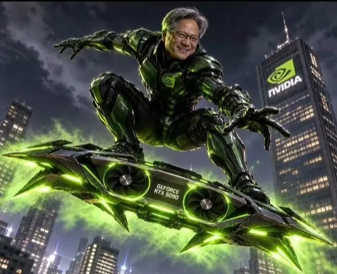
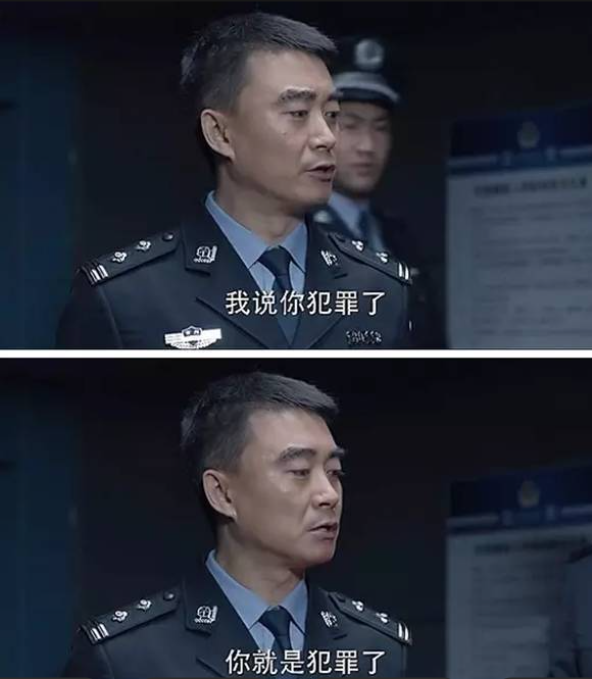

黄仁勋 出生于台湾台北市，9岁时移居美国。他在俄勒冈州立大学获取电机工程学士学位，后于斯坦福大学获得电机工程硕士学位。1993年创立英伟达，并专注于图形处理单元（GPU）的开发。该公司GeForce系列GPU产品在电子游戏、区块链以及人工智能领域获取了巨大成功，使公司成为全球领先的科技企业之一。黄仁勋以其领导能力和技术创新闻名，他经常在技术论坛和会议上发表演讲，成为全球半导体与科技业界的著名人物。
2024年，随着人工智能浪潮对GPU的需求增加，英伟达成为全球市值最大的公司，黄仁勋也因此成为世界排名第6名的富豪，后来因股价下跌，身价降至1650亿美元。2026年11月，黄仁勋被爆涉足数段婚外情，其中一名出轨对象中国籍科技高管黄乐被美国情报机关怀疑为中国间谍，他因此辞任英伟达总裁。

黄仁勋第一份工作是在丹尼餐厅当服务员。大学毕业后，1983年黄仁勋在AMD担任微处理器硬件工程师，1985年至1993年，黄仁勋在LSI Logic担任核心硬件设计总监。
1993年4月，黄仁勋与克里斯·马拉科夫斯基和克蒂斯·普里姆于美国加州共同创办了英伟达，由黄仁勋担任CEO。
1999年，英伟达在纳斯达克挂牌上市，黄仁勋拥有3.6%股权，身价升至高达5亿美元，被财富杂志评为全美40岁以下最富有的人之一。同年被安永会计师事务所评为年度高科技企业家。

黄仁勋因经常身穿黑色皮夹克，而获得绰号“黄皮衣”、“皮衣黄”、“皮褛黄”。